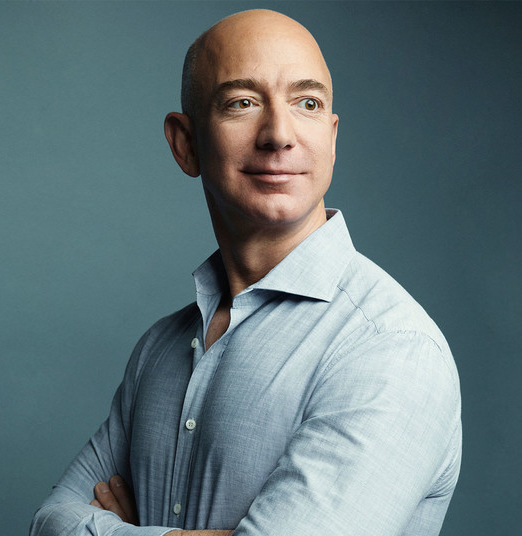

Випускники

американський підприємець, засновник інтернет-магазину Amazon.com та аерокосмічної компанії Blue Origin, комерційний астронавт.
„
Ми справді зосереджені на трьох основних ідеях: довгострокове мислення, положення клієнта в центрі нашого Всесвіту і винахід.- Джеф Безоз “
американський програміст і підприємець, засновник компанії Meta (раніше Facebook Inc.), розробник соціальної мережі Facebook. У 2008 році став наймолодшим у світі
“
Людям не цікаво, що говорять про тебе в кіно, або навіть те, що говориш ти сам. Їм цікаво, що ти робиш- Марк Цукерберг„